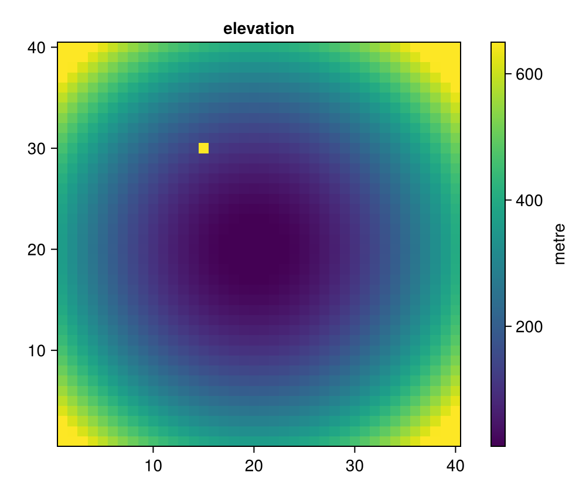

Makie
makieattributes(spec) returns (; plot, colorbar): splat plot into your plotting call and colorbar into Colorbar. A graduated specification ticks each class center with its interval label; a continuous one leaves the colorbar alone.
Continuous heatmap
spec = colorspec(raster; colorrange = Percentile(2, 98))
attributes = makieattributes(spec)
figure = Figure(; size = (500, 420))
axis = Axis(figure[1, 1]; title = "elevation", aspect = DataAspect())
heatmap = heatmap!(axis, raster; attributes.plot...)
Colorbar(figure[1, 2], heatmap; attributes.colorbar..., label = "metre")
figure
Graduated heatmap with a class-labelled colorbar
spec = colorspec(raster, Quantile(5); colorrange = Percentile(2, 98))
attributes = makieattributes(spec)
figure = Figure(; size = (500, 420))
axis = Axis(figure[1, 1]; title = "elevation", aspect = DataAspect())
heatmap = heatmap!(axis, raster; attributes.plot...)
Colorbar(figure[1, 2], heatmap; attributes.colorbar..., label = "metre")
figure
Graduated scatter of point data
The same specification works for points: pass color = values alongside attributes.plot and Makie colors each marker.
spec = colorspec(values, Pretty(5); colorrange = Percentile(2, 98))
attributes = makieattributes(spec)
figure = Figure(; size = (500, 420))
axis = Axis(figure[1, 1]; title = "stations", aspect = DataAspect())
points = scatter!(axis, xs, ys; color = values, attributes.plot..., markersize = 16)
Colorbar(figure[1, 2], points; attributes.colorbar..., label = "value")
figure
Constant data
A constant color range keeps its exact (v, v) on spec.colorrange, but makieattributes widens the display limits so the renderer has a nonzero span to map through:
spec = colorspec(fill(7.0, 4), Quantile(4))
spec.colorrange, makieattributes(spec).plot.colorrange((7.0, 7.0), (6.5, 7.5))Shortcut: pass the specification directly
A ColorSpec converts directly to colormap/colorrange, so a plot without a class-labelled colorbar needs no makieattributes call at all:
spec = colorspec(raster, Quantile(5); colorrange = Percentile(2, 98))
figure = Figure(; size = (500, 420))
axis = Axis(figure[1, 1]; title = "elevation", aspect = DataAspect())
heatmap!(axis, raster; colormap = spec, colorrange = spec)
figure
Pass spec to both keywords together: giving it to only one leaves the other at Makie's default, which does not match spec and can miscolor the plot. colorrange(spec), colorgradient(spec), and classticks(spec) are the accessors makieattributes itself is built from.